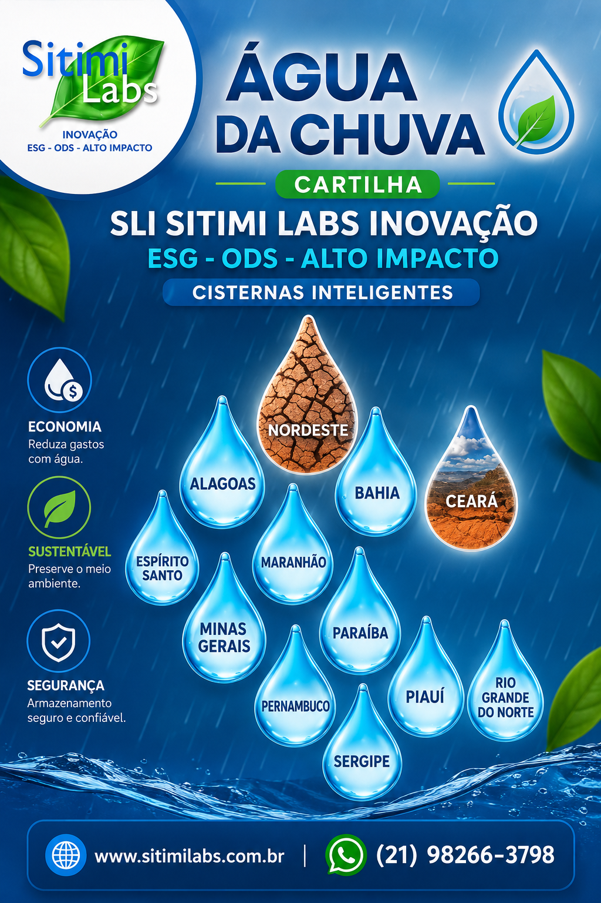
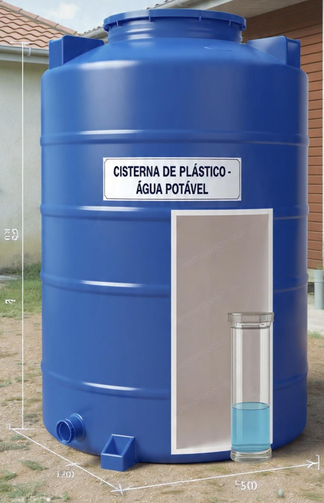
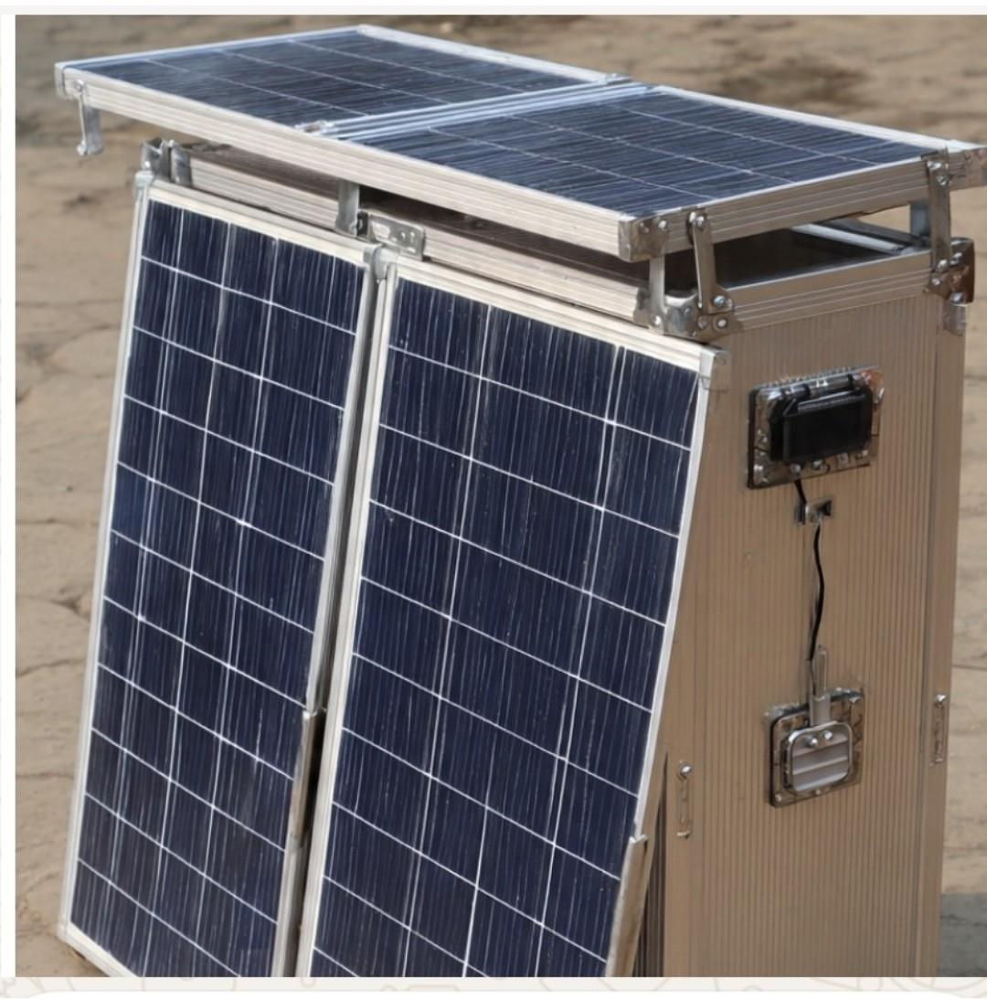
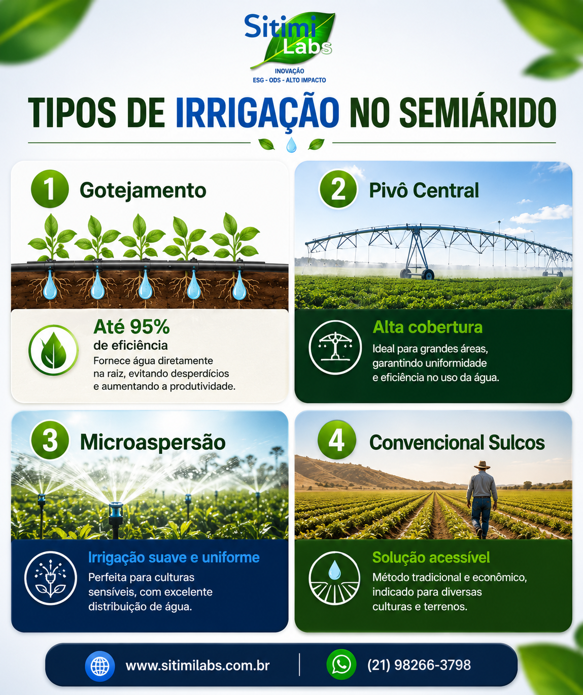

2024
Empresa registrada em Sobral/CE desde 21/09/2024
A Sitimi Labs Inovação é uma empresa brasileira de Empreendimentos de Impacto voltados para ESG, ODS e Alto Impacto Positivo Socioambiental, com comércio, serviços e Pesquisa, Desenvolvimento & Inovação - P,D&I.
Registrada em Sobral/Ceará desde 21/09/2024, com escritório no Rio de Janeiro/RJ e produtos desenvolvidos principalmente a partir da aplicação de patentes verdes nacionais e internacionais inovadoras.

Cartilhas Sitimi Labs Inovação, impressas e digitais, de implantação imediata; um instrumento de divulgação, informações, conhecimentos e captação de recursos do Projeto Cisternas Inteligentes - Mais Água Limpa e Potável-ODS6 e demais Projetos
Um programa completo de materiais e ferramentas para apoiar projetos de água limpa, ESG e ODS no Semiárido Brasileiro.

Parte substancial de todas as atividades e resultados obtidos pela Sitimi Labs Inovação, sempre que possivel, especialmente as ligadas à água, como os Projetos de A a D acima, desembocam na CAUSA SOCIOAMBIENTAL Sitimi Labs Inovação, que promoverá benefícios às populações carentes das Regiões de Semiárido ou semelhantes do Brasil e do mundo, por meio de convênios, licenciamentos e auxílio direto quando aplicáveis.
A principal meta inicial é atender aos beneficiários das 1,3 milhões de familias de atuais usuários das Cisternas de Placas já instaladas no Nordeste brasileiro, multiplicando todos os benefícios que a maior oferta de água pode proporcionar à Região Nordeste e outras Regiões do Brasil e do mundo.
Aplicamos P,D&I com metodologias inéditas e tecnologias inovadoras para promover desenvolvimento sustentável e impacto socioambiental positivo.
Contribuição direta para os Objetivos de Desenvolvimento Sustentável, com prioridade para ODS 6: água limpa e saneamento.
Projetos orientados por Environmental, Social and Governance, com foco em governança, mercado e impacto mensurável.
Atuação inicial em região com escassez crônica e severa de água, escalável para outras regiões do Brasil e do mundo.
Materiais de construção, saúde, agricultura familiar, AgriTech, agroflorestas, educação, cultura, trabalho e renda.
Desenvolvimentos baseados principalmente na aplicação de potencial de patentes verdes nacionais e internacionais.
Projetos em fases tecnológicas TRL3 a TRL9, com estruturação para divulgação massiva, pré-vendas e comercialização.
Parte substancial das atividades e resultados pode apoiar populações carentes por convênios, licenciamentos e auxílio direto.
Soluções para mercados com escassez de água limpa e potável no Brasil e no mundo.
O projeto nasce no Nordeste e pode ser escalado para regiões brasileiras e globais que enfrentam escassez de água limpa e potável.
Pessoas no Semiárido Brasileiro como mercado inicial do projeto de Cisternas Inteligentes.
Clientes potenciais no Brasil em diferentes regiões, cadeias e contextos de aplicação.
Pessoas no mundo com escassez de água limpa e potável, segundo referência apresentada pela ONU.
Retorno estimado para o Projeto Cisternas Inteligentes - Mais Água Limpa e Potável - ODS 6.
Faixa de recursos buscados para operacionalizar os três principais projetos ligados à água.
O principal público alvo do nosso carro-chefe, o Projeto Cisternas Inteligentes - Mais Água Limpa e Potável-ODS-6, está na Região Nordeste - Semiárido Brasileiro, abrangendo um SOM de cerca de 10 milhões de pessoas, podendo ser escalado para outros locais e regiões do Brasil, com um TAM de 70 milhões de clientes e do mundo, com um PAN Global de 2,2 bilhões de pessoas, que têm escassez de água limpa e potável.
segundo a ONU e que engloba toda a cadeia de valor, como indústrias, lojas, e consumidores de comércio, de materiais de construção, construtoras, áreas de Medicina e Saúde, Agricultura Familiar, AgriTech, Agroflorestas, máquinas, equipamentos, insumos e instalações agrícolas, Cultura, Educação, Trabalho e Renda, entre muitos outros correlatos.

Estamos em fases tecnológicas entre TRL3 e TRL9, variáveis entre as diversas propostas, e em estruturação de Go to Market para iniciar a divulgação massiva e a comercialização para implantação de todo o projeto para atender a um potencial de mercado brasileiro de R$ 3,6 bilhões a cada 05 anos, com ROI de 5,5, no Projeto Cisternas Inteligentes - Mais Água Limpa e Potável-ODS6.
Água é o eixo principal, com integração a energia, agricultura, saneamento, logística, educação e renda.

Cisternas de plástico reforçado com design e funções inovadoras para ampliar a oferta de água limpa e potável no Semiárido.

Módulos para purificar água salobra e do mar, com aplicação em poços, rios, reservatórios, cacimbas, cisternas e águas cinzas.
Cada módulo produz cerca de 25 litros de água potável por dia, que pode ser armazenada em cisternas inteligentes, dispensando o uso de osmose reversa e podendo ser aplicado em diferentes regiões do mundo.

Gotejamento, pivô central, microaspersão e sulcos para otimizar água, energia e insumos na agricultura familiar e produtiva.
Busca otimizar os sistemas de irrigação, aumentando a eficiência e reduzindo o consumo de água, energia e recursos, resultando em mais e melhores safras.

Soluções para transporte de água, líquidos, pastosos e pós, conectando logística, segurança e melhor custo-benefício operacional.
A ideação começou após trabalho voluntário no sertão de Sergipe, evoluiu como startup/instituição informal e tornou-se empresa em setembro de 2024.
Contato inicial com cisternas de placas de cimento em Riachão do Dantas/SE, em trabalho voluntário pela OSC RIO Voluntário.
Participações em conferências, acelerações, hackathons e programas como ICID18, Founder Institute, InovAtiva, Eletrobras EnergINN, BID ao CUBO e Hacking.RIO.
Acelerado pelo StartupNE-CE, aprovado na incubadora do PIT SJC e cadastrado em mapeamentos de negócios de impacto socioambiental.
Além dos projetos de água, a Sitimi Labs Inovação mantém um portfólio de propostas com potencial de alto impacto socioambiental.
Estamos em fase de captação por pré-vendas, vendas, parcerias, fomentos, campanhas, doações e investidores. Os projetos de água partem de R$ 200 mil a R$ 1 milhão para operacionalização.